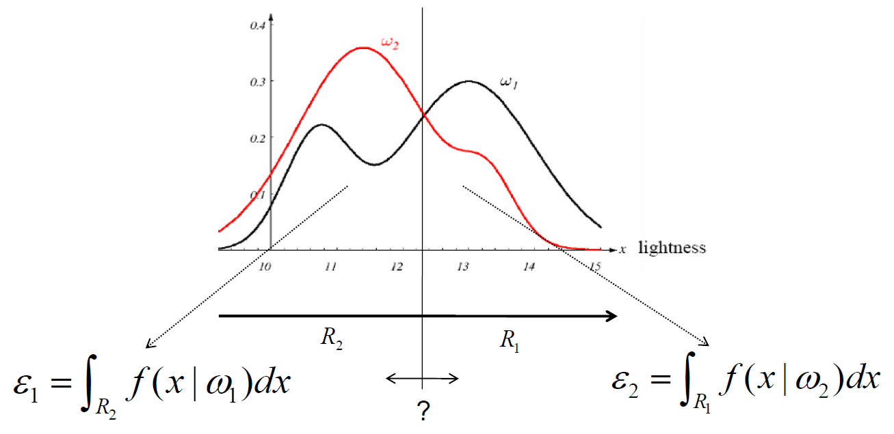
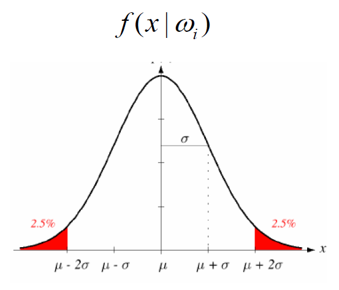
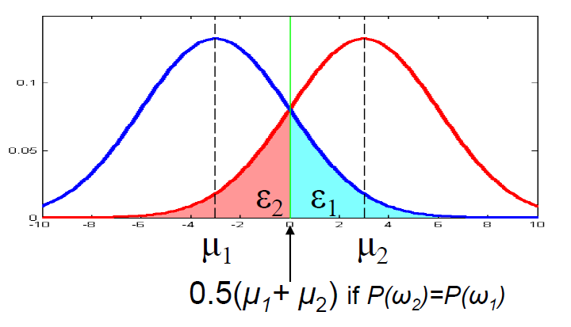
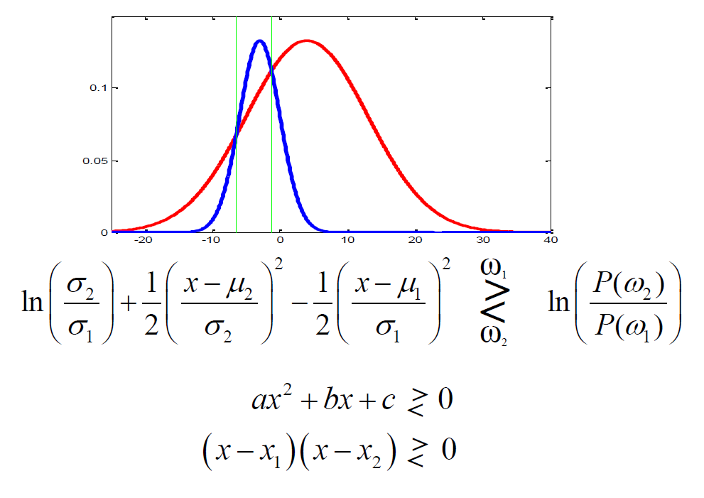

Feature Space:
Feature: a distinctive characteristic or quality of the object
Feature vector: combine more than one feature as a vector
Feature space: The space defined by the feature vectors
Classifiers:
Decision regions: a classifier partitions the feature space into class-corresponding decision regions.
Decision boundaries: the borders between the decision regions.
\[P(w_i|x)=\frac{P(x,w_i)}{P(x)}=\frac{P(x|w_i)P(w_i)}{\sum_{k=1}^{C}{P(x|w_k)P(w_k)}}\]
Posterior Probability \(P(w_i|x)\): the conditional probability of correct class being \(w_i\) given that feature value \(x\) has been observed.
Evidence \(P(x)\): the total probability of observing the feature value of \(x\).
Likelihood \(P(x|w_i)\): the conditional probability of observing a feature value of \(x\) given that the correct class is \(w_i\).
Prior Probability \(P(w_i)\): the probability of class \(w_i\), \(\sum_{k=1}^{C}{P(w_k)}=1\).
Bayes Classifiers decide on the class that has the largest posterior probability (\(\max_{w_i}{P(w_i|x)}\)). They are statistically the best classifiers i.e. they are minimum error classifiers (optimal).
\(\epsilon=P(error|class)\): probability of assigning \(x\) to the wrong class \(w\).
\(P_e=\sum_{k=1}^{C}{P(w_k)\epsilon_k}\): total probability of error.

For the two class case shown above, we want to minimize \(P_e\) as below: \[\begin{array}{rcl} P_e & = & P(w_1)\epsilon_1 + P(w_2)\epsilon_2 \\ & = & P(w_1)\int_{R_2}{f(x|w_1)dx} + P(w_2)\int_{R_1}{f(x|w_2)dx} \\ & = & P(w_1)(1-\int_{R_1}{f(x|w_1)dx}) + P(w_2)\int_{R_1}{f(x|w_2)dx} \\ & = & P(w_1) + \int_{R_1}{(P(w_2)f(x|w_2) - P(w_1)f(x|w_1))dx} \\ \end{array}\] To minimize \(P_e\), we want \(P(w_2)f(x|w_2) - P(w_1)f(x|w_1)\) to be always negative\((<0)\) in the region \(R_1\): \[\begin{array}{rcl} P(w_1)f(x|w_1) - P(w_2)f(x|w_2) >0 & \Rightarrow & w_1 \\ P(w_1)f(x|w_1) - P(w_2)f(x|w_2) <0 & \Rightarrow & w_2 \\ \end{array}\]
Likelihood ratio: \(l(x)=\frac{f(x|w_1)}{f(x|w_2)}\)
Log likelihood ratio: \(\ln(l(x))=\ln(\frac{f(x|w_1)}{f(x|w_2)})=\ln(f(x|w_1))-\ln(f(x|w_2))\)
Ratio of a priori probabilities: \(T=\frac{P(w_2)}{P(w_1)}\)
Log ratio of a priori probabilities: \(\ln(T)=\ln(\frac{P(w_2)}{P(w_1)})=\ln(P(w_2))-\ln(P(w_1))\)
\[\begin{array}{rcl} \ln(l(x)) = \ln(\frac{f(x|w_1)}{f(x|w_2)}) > \ln(\frac{P(w_2)}{P(w_1)}) = \ln(T) & \Rightarrow & w_1 \\ \ln(l(x)) = \ln(\frac{f(x|w_1)}{f(x|w_2)}) < \ln(\frac{P(w_2)}{P(w_1)}) = \ln(T) & \Rightarrow & w_2 \\ \end{array}\]
Assume likelihood \(f(x|w_i)\) are Gaussian distributions with mean \(\mu_i\) and variance \(\sigma_i^2\). \[f(x|w_i)=\frac{1}{\sqrt{2\pi\sigma_i^2}}\exp\left(-\frac{(x-\mu_i)^2}{2\sigma_i^2}\right)\]

The log likelihood ratio: \[\begin{array}{rcl} \ln(l(x)) & = & \ln\left(\frac{\frac{1}{\sqrt{2\pi\sigma_1^2}}\exp\left(-\frac{(x-\mu_1)^2}{2\sigma_1^2}\right)}{\frac{1}{\sqrt{2\pi\sigma_2^2}}\exp\left(-\frac{(x-\mu_2)^2}{2\sigma_2^2}\right)}\right) \\ & = & \ln(\frac{\sigma_2}{\sigma_1})+\frac{(x-\mu_2)^2}{2\sigma_2^2}-\frac{(x-\mu_1)^2}{2\sigma_1^2} \end{array}\]
Case: \(\sigma_1=\sigma_2=\sigma\) \[\begin{array}{rcl} \ln(l(x)) & = & \frac{2x(\mu_1-\mu_2)-(\mu_1^2-\mu_2^2)}{2\sigma^2} \end{array}\]
\[\begin{array}{rcl} x(\mu_1-\mu_2) - \frac{\mu_1^2-\mu_2^2}{2} > \sigma^2 \ln(\frac{P(w_2)}{P(w_1)}) & \Rightarrow & w_1 \\ x(\mu_1-\mu_2) - \frac{\mu_1^2-\mu_2^2}{2} < \sigma^2 \ln(\frac{P(w_2)}{P(w_1)}) & \Rightarrow & w_2 \\ \end{array}\]
If \(P(w_1)=P(w_2)\) \[x = \frac{\mu_1+\mu_2}{2}\]

Case: \(\sigma_1\neq\sigma_2\)

Learning & Classification
Supervised:
Bayes Density:
Parametric: assumes a particular form of a PDF (e.g. Gaussian) is known \(\rightarrow\) determine the parameters (e.g. mean and variance)
Maximum Likelihood (\(f(x|w_i)\)) Estimation (MLE)
Maximum A Posteriori (Bayesian \(p(w_i|x)\)) Estimation (MAPE)
Non-Parametric: no assumption about the density
Parzen Windows
Kernel Density Estimation
K-Nearest Neighbor Rule
Discriminant Analysis:
Linear
Non-Linear
Unsupervised:
Clustering
Steps:
Assume \(P(x|w)\) has a known parametric form uniquely determined by the parameter vector \(\theta\)
The parameters are assumed to be fixed (i.e. non random) but unknown
Suppose we have a dataset \(D\) with the samples in \(D\) having been drawn independently according to the probability law \(P(x|w)\)
The MLE is the value of \(\theta\) that best explains the data and once we know this value, we know \(P(x|w)\) \[\hat{\theta}=\operatorname*{arg\,max}_\theta\{P(D|\theta)\}=\operatorname*{arg\,max}_\theta\{\prod_{k=1}^{N}{P(x_k|\theta)}\}=\operatorname*{arg\,max}_\theta\{\sum_{k=1}^{N}{\log(P(x_k|\theta))}\}\] Choose the value of \(\theta\) that is the most likely to give rise to the data we observe.
Method:
Assume \(\theta=[\theta_1,\theta_2,\dots,\theta_p]^T\)
Assume gradient operator \(\nabla_\theta=[\frac{\partial}{\partial\theta_1},\frac{\partial}{\partial\theta_2},\dots,\frac{\partial}{\partial\theta_p}]^T\)
Assume the log-likelihood of the objective function \(l(\theta)=\sum_{k=1}^{N}{\log(P(x_k|\theta))}\)
Therefore: \(\nabla_\theta l(\theta)=\sum_{k=1}^{N}{\nabla_\theta \log(P(x_k|\theta))}=0\)
\[P(x|\mu,\sigma^2)=\frac{1}{\sqrt{2\pi\sigma^2}}\exp(-\frac{(x-\mu)^2}{2\sigma^2})\]
\[\theta=\left[\begin{array}{c} \theta_1=\mu \\ \theta_2=\sigma^2 \\ \end{array}\right]\]
\[\begin{array}{rcl} \log(P(x_k|\theta)) & = & \log(\frac{1}{\sqrt{2\pi\theta_2}}\exp(-\frac{(x_k-\theta_1)^2}{2\theta_2})) \\ & = & -\frac{1}{2}\log(2\pi\theta_2)-\frac{(x_k-\theta_1)^2}{2\theta_2} \\ \end{array}\]
\[\begin{array}{rcl} \nabla_\theta \log(P(x_k|\theta)) & = & \left[ \begin{array}{c} \frac{x_k-\theta_1}{\theta_2} \\ -\frac{1}{2\theta_2}+\frac{(x_k-\theta_1)^2}{2\theta_2} \\ \end{array}\right] \\ \Rightarrow \left\{ \begin{array}{rcl} \sum_{k=1}^{n}{\frac{1}{\theta_2}(x_k-\theta_1)} & = & 0 \\ -\sum_{k=1}^{n}{\frac{1}{\theta_2}}+\sum_{k=1}^{n}{\frac{(x_k-\theta_1)^2}{\theta_2^2}} & = & 0 \\ \end{array}\right. & \Rightarrow & \left\{ \begin{array}{rcl} \hat{\mu} & = & \frac{1}{n}\sum_{k=1}^{n}{x_k} \\ \hat{\sigma}^2 & = & \frac{1}{n}\sum_{k=1}^{n}{(x_k-\hat{\mu})^2} \\ \end{array}\right. \\ \end{array}\]
\[P(x|\mu,\Sigma)=\frac{1}{(2\pi)^{d/2}|\Sigma|^{1/2}}\exp(-\frac{1}{2}(x-\mu)^T\Sigma^{-1}(x-\mu))\]
Case: only the mean \(\mu\) is unknown
\[\log(P(x_k|\mu)) = -\frac{1}{2}\log((2\pi)^{d}|\Sigma|)-\frac{1}{2}(x_k-\mu)^T\Sigma^{-1}(x_k-\mu)\]
\[\begin{array}{rcl} \nabla_\theta \log(P(x_k|\mu)) & = & \Sigma^{-1}(x_k-\mu) \\ \Rightarrow \sum_{k=1}^{n}{\Sigma^{-1}(x_k-\mu)} = 0 & \Rightarrow & \hat{\mu} = \frac{1}{n}\sum_{k=1}^{n}{x_k} \end{array}\]
Case: Neither the mean \(\mu\) nor the covariance matrix \(\Sigma\) are known
\[\theta=\left[\begin{array}{rcl} \theta_1 & = & \mu \\ \theta_2 & = & \Sigma \\ \end{array}\right]\]
Convert the covariance matrix \(\Sigma\)
\[\begin{array}{rcl} P(D|\Sigma) & = & \prod_{k=1}^{n}{P(x_k|\Sigma)} \\ & = & \prod_{k=1}^{n}{\frac{1}{\sqrt{(2\pi)^d|\Sigma|}}\exp(-\frac{1}{2}(x_k-\mu)^T\Sigma^{-1}(x_k-\mu))} \\ & = & \frac{1}{((2\pi)^d|\Sigma|)^{n/2}}\exp(-\frac{1}{2}\sum_{n}^{k=1}{(x_k-\mu)^T\Sigma^{-1}(x_k-\mu)}) \\ \end{array}\]
The property of matrix trace
scalar \(b^TBb=trace(b^TBb)=trace(Bbb^T)\)
\(trace(A+B)=trace(A)+trace(B)\)
\(trace(C(A+B))=trace(CA)+trace(CB)\)
\(trace(A)\) is the sum of \(A\)’s eigenvalues
\[\begin{array}{rcl} \sum_{n}^{k=1}{(x_k-\mu)^T\Sigma^{-1}(x_k-\mu)} & = & \sum_{n}^{k=1}{trace((x_k-\mu)^T\Sigma^{-1}(x_k-\mu))} \\ & = & \sum_{n}^{k=1}{trace(\Sigma^{-1}(x_k-\mu)(x_k-\mu)^T)} \\ & = & trace(\Sigma^{-1}\sum_{n}^{k=1}{(x_k-\mu)(x_k-\mu)^T})\\ \end{array}\]
Assume \[A=\frac{1}{n}\sum_{k=1}^{n}(x_k-\mu)(x_k-\mu)^T\] and \(A\) is fixed.
Then \[\sum_{n}^{k=1}{(x_k-\mu)^T\Sigma^{-1}(x_k-\mu)} = n~trace(\Sigma^{-1}A)\]
Therefore \[P(D|\Sigma) = \frac{1}{((2\pi)^d|\Sigma|)^{n/2}}\exp(-\frac{n}{2}trace(\Sigma^{-1}A))\]
Assume \[B=\Sigma^{-1}A\] and B’s eigenvalues are \(\lambda_1,\lambda_2,\dots,\lambda_d\)
The property of matrix determinant
\(det(AB)=det(A)det(B)\)
\(det(A^{-1})=det(A)^{-1}\)
\(det(A)\) is the product of \(A\)’s eigenvalues
Therefore \[\begin{array}{rcl} P(D|\Sigma) & = & \frac{1}{((2\pi)^d|\Sigma|)^{n/2}}\exp(-\frac{n}{2}trace(\Sigma^{-1}A)) \\ & = & \frac{1}{(2\pi)^{dn/2}}|\Sigma|^{-n/2}\exp(-\frac{n}{2}trace(B)) \\ & = & \frac{1}{(2\pi)^{dn/2}}(\frac{|B|}{|A|})^{n/2}\exp(-\frac{n}{2}trace(B)) \\ & = & \frac{1}{(2\pi)^{dn/2}}|A|^{-n/2}(\prod_{i=1}^{d}{\lambda_i})^{n/2}\exp(-\frac{n}{2}\sum_{i=1}^{d}{\lambda_i}) \\ \end{array}\]
\[\log(P(D|\Sigma))=-\frac{dn}{2}\log(2\pi)-\frac{n}{2}\log(|A|)+\frac{n}{2}\sum_{i=1}^{d}{\log(\lambda_i)}-\frac{n}{2}\sum_{i=1}^{d}{\lambda_i}\]
\[\frac{\partial(\log(P(x|\Sigma)))}{\partial\lambda_i}=\frac{n}{2\lambda_i}-\frac{n}{2}=0 \Rightarrow \lambda_i=1\]
Therefore \(B \sim I\), and \(\Sigma^{-1}A=I \Rightarrow \hat{\Sigma}=A=\frac{1}{n}\sum_{k=1}^{n}(x_k-\mu)(x_k-\mu)^T\).
Steps:
The parameters are assumed to be random variables with some known priori distribution.
Bayesian approach aims at estimating the posterior density \(P(\theta|D)\)
The MAPE(Maximum A Posteriori Estimate) of \(\theta\) is the value of \(\theta\) that maximizes the posterior density \(P(\theta|D)\).
Method:
Estimate \(P(x|D)\) from sample data, and assume it has a known parametric form. So \(P(x|\theta)\) is completely known, but \(\theta\) is random variable and has its own PDF.
\(P(x|D)=\int{P(x,\theta|D)d\theta}=\int{P(x|\theta)P(\theta|D)d\theta}\)
Posterior \(P(\theta|D)=\frac{P(D|\theta)P(\theta)}{P(D)}\), where \(P(D|\theta)=\prod_{k=1}^{n}{P(x_k|\theta)}\)
Since \(P(D)\) is constant, therefore \(\hat{\theta}=\operatorname*{arg\,max}_\theta\{P(D|\theta)P(\theta)\}\)
...
...